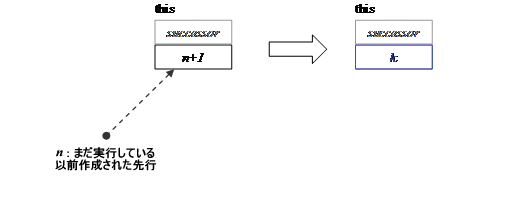
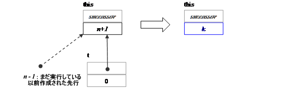

タスク t を作成すると、t.execute() を呼び出すスレッドが呼び出されるか、t がレディプールに格納されます。その後、タスク・スケジュールに関与しているスレッドがタスクを取得して、t.execute() を呼び出します。「スケジュール・アルゴリズム」セクションで、レディプールの構造を説明しています。
タスクを生成する呼び出しには 2 つの形式があります。
単一のタスクを生成する呼び出し。
task_list で指定された複数のタスク・オブジェクトを生成して task_list を消去する呼び出し。
一部の呼び出しは、生成されるルートタスクとルート以外のタスクを識別します。ルートタスクは、allocate_root メソッドを使用して作成されます。
set_ref_count メソッドを呼び出して、プレデセッサーの数と "wait_for_all" メソッドの使用が明らかになるまで、タスクはプレデセッサー・タスクを生成しません。
| メンバー | 説明 |
|---|---|
| void set_ref_count( int count ) | 要件: count>=0。連続で n のプレデセッサーを生成して待つ場合、count が n+1 であること。その他の場合、count が n であること。 効果: refcount 属性を count に設定します。 |
| int add_ref_count( int count ) | refcount 属性に count をアトミックに追加します。 戻り値: refcount 属性の新しい値。 |
| void increment_ref_count(); | refcount 属性をアトミックにインクリメントします。 |
| int decrement_ref_count(); | refcount 属性をアトミックにデクリメントします。 戻り値: refcount 属性の新しい値。 注add_ref_count、increment_ref_count、および decrement_ref_count の明示的な使用は通常、タスクに 2 つ以上のサクセサータスクがある場合にのみ必要です。詳細は、チュートリアルの「タスクの一般的な非循環グラフ」セクションで説明しています。 |
| void wait_for_all() | 要件: refcount=n+1。ここで、n はまだ実行しているプレデセッサーの数。 効果: refcount が 1 になるまでレディプールのタスクを実行します。その後、タスクの task_group_context が concurrent_wait を指定する場合は refcount=1 のまま変更しません。その他の場合、refcount を 0 に設定します。下記の図は、状態遷移を要約したものです。 wait_for_all() は、次の条件がすべて満たされる場合、タスクと暗黙的に関連する task_group_context のキャンセル状態を自動的にリセットします。
ヒント上記の条件下では、task_group_context がキャンセルされた場合に、後から状態を知る方法はありません。状態を知る必要がある場合は、明示的に task_group_context を使用してください。 wait_for_all の効果
 k=0 (デフォルト) k=1 (対応する task_group_context が concurrent_wait を指定する場合) |
| static void spawn( task& t ) | タスク t をレディプールに格納して直ちにリターンします。 t の successor が NULL でない場合、子タスクが完了すると successor.refcount が非同期にデクリメントされるため、successor は子タスクが作成される前に set_ref_count を呼び出す必要があります。ライブラリーのデバッグバージョンは、set_ref_count への必要な呼び出しが行われなかったり、または遅すぎる場合を検出します。 |
| static void spawn ( task_list& list ) | list の各タスクで spawn を実行して list をクリアするのと等価ですが、より効率的です。list が空の場合、何も起こりません。 注タスクは個々にスチールされるため、list が長い場合、ボトルネックが発生する可能性があります。ボトルネックが発生する場合は、代わりに再帰パターンや並列ループ・テンプレートを使用して、多くの個々のワークに分割することを検討してください。 |
| void spawn_and_wait_for_all( task& t ) | 要件: this のほかのプレデセッサーがすでに作成されていること。タスク t が NULL 以外の successor 属性を含むこと。t から呼び出しタスクまで successor リンクのチェーンがあること。通常、このチェーンは単一のリンクを含みます。つまり、t は this のプレデセッサーです。 効果: {spawn(t); wait_for_all();} に似ていますが、多くの場合より効率的です。さらに、task が現在のスレッドによって実行されることを保証します。この制約は、同期を単純化する場合があります。下記の図は、状態遷移を要約したものです。上記の図に似ていますが、タスク t は n 番目のタスクです。 spawn_and_wait_for_all の効果
 k=0 (デフォルト) k=1 (対応する task_group_context が concurrent_wait を指定する場合) |
| void spawn_and_wait_for_all( task_list& list ) | {spawn(list); wait_for_all();} に似ていますが、多くの場合より効率的です。 |
| static void spawn_root_and_wait( task& root ) | 要件: タスク root のメモリーが task::allocate_root() で割り当てられていること。 効果: root の parent 属性に未定義の値を設定して、「execute() の処理」セクションで説明されているように root を実行します。root が再利用されていなければ、後で root を破棄します。 |
| static void spawn_root_and_wait( task_list& root_list ) | 要件: root_list の各タスク・オブジェクト t が static void spawn_root_and_wait( task& root ) の要件を満たしていること。 効果: root_list の各タスク・オブジェクト t で、spawn_root_and_wait(t) を並列に実行します。「static void spawn_root_and_wait( task& root )」セクションで、spawn_root_and_wait(t) の動作を説明しています。 |
| static void enqueue ( task& ) | タスクの完了を明示的に待っているスレッドがない場合でも、タスクはワーカースレッドにより最終的に実行されるようにスケジュールされます。ワーカースレッドの合計が 0 の場合、キューに入れられたタスクを実行する追加の特別なワーカースレッドが作成されます。 キューに入れられたタスクは、先着順に処理されます。 注意再帰並列処理でキューに入れられたタスクを使用すると、再帰が幅優先で行われるため、メモリーの使用量が非常に多くなります。再帰並列処理には、通常の spawn メソッドを使用してください。 注意プログラムの無関係な部分からほかのキューに入れられたタスクを先に処理しなければならない可能性があるため、キューに入れられたタスクを明示的に待つことは避けてください。キューに入れられたタスクの使用を推奨するパターンは、例えば、タスクをキューに入れたスレッドにメッセージを送ることにより、タスクの完了を非同期に知る方法です。例については、インテル® TBB の「デザインパターン」を参照してください。 |